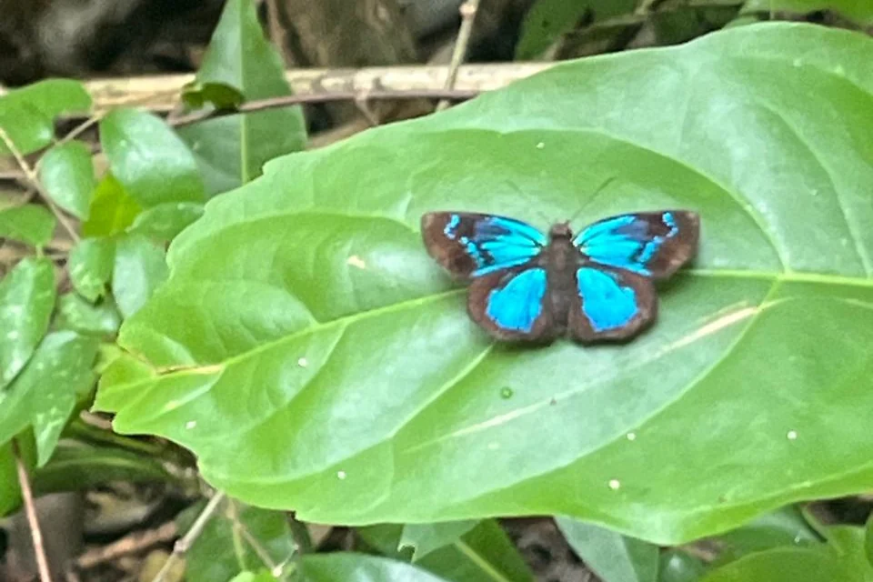

La Oda de las Charamuscas
Una compilación literaria que convive con las emociones: escritura que deja atrás la fábula para convertir el mutismo en asombro y creatividad.

Foto de Raquel · Monte Firme“Voló Hierberito, entre charamuscas se refugió.”
Las charamuscas son pajitas secas, hierba endeble. Y son, también, la barrera invisible que ampara al niño frente a la incomprensión — protegiéndolo hasta el día en que llega un maestro capaz de valorar su voz, incluso en sus ocurrencias.
— Raquel Sofía Díaz González
El nido es mucho más que la suma de sus materiales. Las pajitas no están al azar: se organizan con un propósito vital, como una espiral de cuidado y empatía.
“Los elementos, bien ubicados, hacen un refugio para que los pichones se sientan más suave y cómodo.”
Este es el rincón donde Raquel irá publicando su escritura: cuentos, poemas y la voz de los niños del territorio. Vuelve pronto.
Lo más reciente que ha compartido Raquel.
Cargando…
Acompaño a docentes y estudiantes que quieren encontrar su voz y dar forma a sus textos.
Conoce las asesorías →